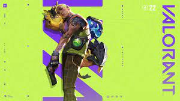

Top 5 strongest agents in valorant
A lot of peope play the game known as valorant, and in the game you play as characters called agents. There are a total of 21 playable agents in valorant, each with their own lore and power level. The fith strongest agent in valorant is neon, due to her power over electricity. The fourth most powerful agent is yoru, due to his dimensional capabilities. The third strongest is omen, due to him not being human and his shadow and teleportation powers. The second strongest is sage, with her ability to heal along with create jade. The strongest is Astra, with her abilities affecting the cosmos itself.